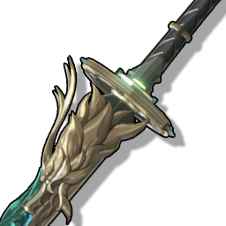

Verdant Summit
A thousand-year-old mountain forms the spine, and the river of ten thousand years forms the blade. The heavens and the earth naturally form this weapon. The blade is unsheathed, the dragon's roar breaks the sky, and in an instant, the white waves are like mountains, the sea water is shaken, the sound is like ghosts and gods, and it is awe-inspiring for thousands of miles.

Rarity: 5-star
Type: Broadblade
| Level |
ATK |
Crit. DMG |
| 1 |
47 |
10.8% |
| 20 |
122 |
19.1% |
| 20+ |
153 |
19.1% |
| 40 |
232 |
27.5% |
| 40+ |
264 |
27.5% |
| 50 |
303 |
31.7% |
| 50+ |
335 |
31.7% |
| 60 |
374 |
35.9% |
| 60+ |
406 |
35.9% |
| 70 |
445 |
40.1% |
| 70+ |
476 |
40.1% |
| 80 |
516 |
44.3% |
| 80+ |
547 |
44.3% |
| 90 |
587 |
48.6% |
Passive
All Resonance damage is increased by
12%/15%/18%/21%/24%. Each time an Intro Skill or Resonance Liberation is cast, the damage of the Heavy Attack is increased by
24%/30%/36%/42%/48%, and it can be stacked
2/2/2/2/2 times, and the effect lasts for
14/14/14/14/14 seconds.